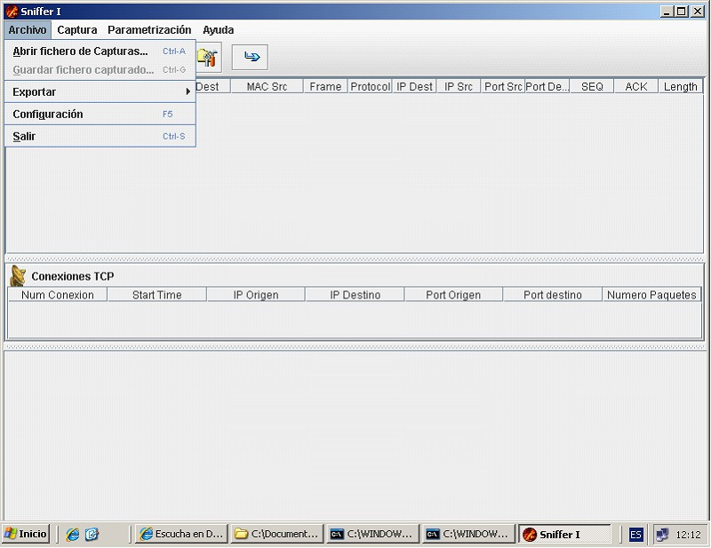
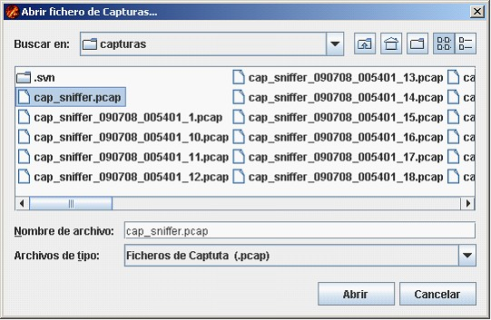
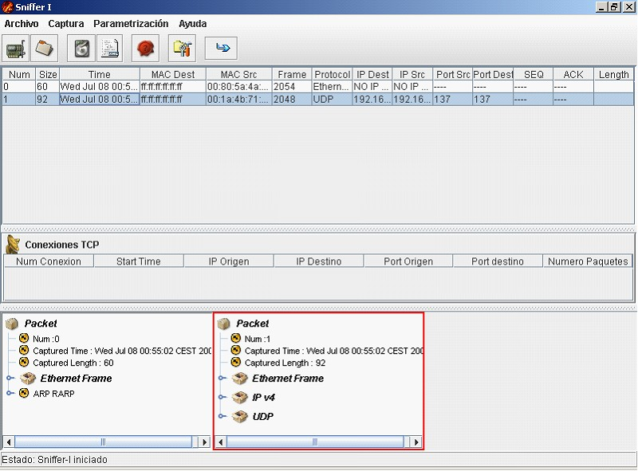
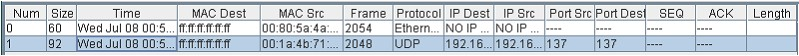
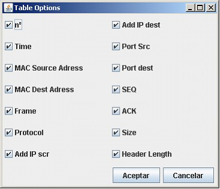
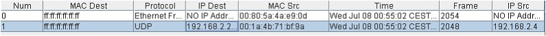
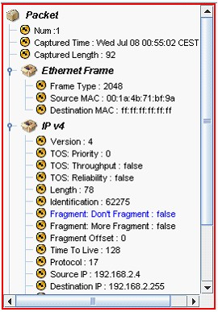

Menu Archivo
Al pulsar el menú archivo, podremos acceder a las opciones que este nos ofrece.

Dentro de estas opciones, al selecionar la opción de Abrir fichero de Capturas, aparecerá en pantalla un ventana que permitirá escoger (de existir alguna captura anterior guardada en disco) un fichero con la información de

Tras seleccionar el fichero deseado o escribir su nombre en la ventana correspondiente, se debe pulsar el botón Abrir, acto seguido, la aplicación procesará la información y la mostrará por pantalla.

Se observa que en la parte superior se muestra la información genérica de los paquetes capturados, como:

Pulsando el botón derecho sobre la cabecera de la tabla se podra escoger que información desea visualizarse.

En el caso de desplazar las cabeceras con el botín izquierdo, podremos ordenar las columnas.

En la parte inferior se puede revisar la información más específica para cada uno de los paquetes capturados.

Copyright © 2010, <Carlos Mardones Muga>
Created with the Freeware Edition of HelpNDoc: Easily create PDF Help documents